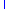
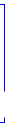

待检查
待整改
待检查（逾期）
逾期未整改
正常
整改完成
整改完成（逾期）

无问题

1、检查单（父单与子单）状态为“待检查”；“待整改”；“正常”；“整改完成”。
2、逾期状态：
单独作为字段。记录是否逾期。（是；否两种状态）不影响检查单状态。
1、检查单状态说明：（子单说明）
待整改：在检查时间范围内，出现问题。选择需要整改。
待审核：待整改状态提交后为待审核，须检查人审核。该状态无逾期状态。
整改完成：在整改时间范围内，整改完成。
记录是否逾期：（该检查单处理时是否超过时间；超过则是，否则为否）
待整改（逾期）：超过整改时间，未整改。
整改完成（逾期）：超过整改时间，但已整改。
2、检查单状态说明：（父单说明）
待检查：已经创建的，未检查的。
待整改：有一个子单为待整改状态。或一个待审核状态。
正常： 检查无问题。
整改完成：所有子单都是整改完成状态。
记录是否逾期：
未检查（逾期）：已创建检查单，但超过检查时间，未检查。
待整改（逾期）：子单有一个逾期为逾期状态。
整改完成（逾期）：子单有一个逾期为逾期状态。
页面说明

红色线为正常流程。蓝色线为异常流程。
待审核

正常

正常
有问题


有问题